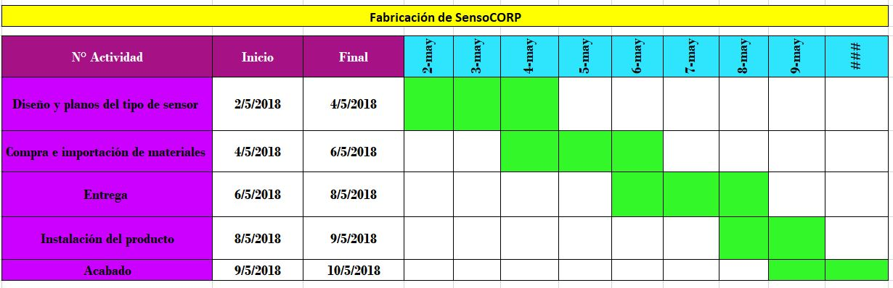

Prototipar
Crearemos elementos de seguridad en las cuales se representará en maquetas o alguna representación virtual que nos ayudará a poner a prueba nuestras ideas, interactuar con nuestro cliente, luego de ello debatiremos y tendremos una solución final lo cual nos ayudará a redefinir las ideas para así poder tener un mejor producto.
Un prototipo implica acompañar la explicación de una idea con el desarrollo de prototipos rápidos con cualquier material que se encuentre alrededor. Ayuda a mejorar la interacción entre los miembros del equipo y a llegar a definiciones más concisas de las ideas a desarrollar.
DIAGRAMA GANTT DE IMPLEMENTACIÓN DEL PROYECTO


VIDEO PUBLICITARIO
FUNCIONAMIENTO DEL PROYECTO
DESARROLLO DEL DIAGRAMA GANTT PARA EJECUTAR LA IMPLEMENTACIÓN DEL PROYECTO.
El diagrama de Gantt es una herramienta que se emplea para planificar y programar tareas a lo largo de un período determinado de tiempo. Gracias a una fácil y cómoda visualización de las acciones a realizar, permite realizar el seguimiento y control del progreso de cada una de las etapas de un proyecto.Reproduce gráficamente las tareas, su duración y secuencia, además del calendario general del proyecto y la fecha de finalización prevista.
Hacer click para descargar el archivo (excel).LISTA DE COSTOS.
La realización de una lista de costos es un proceso que consiste de dar conocer una cierta aproximación monetaria de los recursos necesario que necesitemos para así poder culminar nuestro proyecto. Tener una base de información sobre los costos óptimos para la realización de nuestro proyecto.Por lo tanto, deeben ser revisados y ajustados en el transcurso del proyecto para que reflejen los detalles adicionales en tanto estos se hacen disponibles. La estimación del costo aumenta su exactitud conforme avanza el proyecto.
Lista de costos
DESARROLLO DE UNA CAMPAÑA DE ALTO IMPACTO.
En esta parte nosotros como empresa SensoCORP daremos a conocer un poco sobre
INTERACCIÓN DEL CLIENTE CON EL PRODUCTO.
El siguiente video daremos a conocer sobre el funcionamiento del producto, algunas dudas y críticas del producto lo cual nos ayudará hacer que nuestro producto mejore.